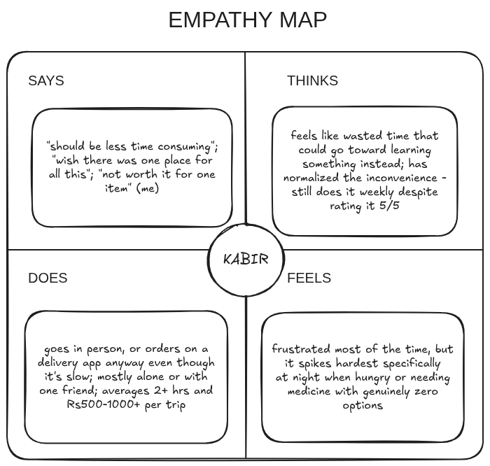
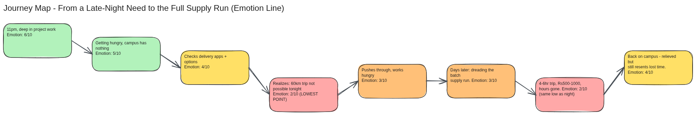
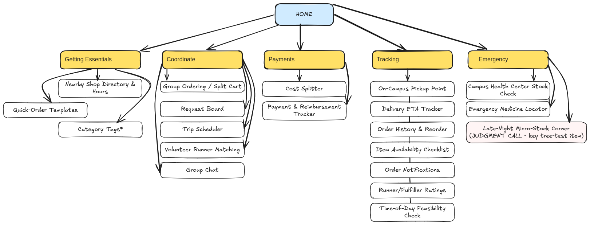

Phase 1 — User Persona & Research
Proto-Persona (initial assumption, before real data)
Aditi, 20, 2nd-year, hostel resident. Assumed goal: get everyday essentials without losing half a day. Assumed frustration: nothing delivers to campus, so she waits it out or asks around for someone with a bike instead of going herself.
True User Persona — Kabir (validated against 5 students)
3rd/4th year, hostel resident (6 of 7 survey respondents live in hostel). Needs quick access to food, medicine, and daily essentials without losing hours of study or work time.
- Behavior: mostly goes in person, or waits on a delivery app that still takes 2+ hours; when a trip doesn't feel worth it, just skips it.
- Frustration: rates the whole process 5/5 on average, weekly.
- Quotes:
if there could be any single place from where can get all this and use our time in upskilling
andshould be less time consuming.
How this differs from the proto-persona: I assumed people mostly ask friends for help. The data shows people increasingly try delivery apps first, but those still fail them at the exact moment they need something most: at night.
Interview / Observation Method
Every log kept two columns, separate, always. What I saw/heard: just the facts, zero reading into it, CCTV-style. What I think it means: my own interpretation, written only after, clearly marked as mine. A sloppy observation log invalidates everything built on top of it.
Survey Data — 7 responses (5 core students + 2 flagged)
- 5 of 7 flagged late-night hunger/food as the top urgent unmet need, more common than medical (3/7) or academic supplies (2/7).
- 5 of 7 took 2+ hours per trip. Frustration mode = 5/5.
- Method split: 3 went in person, 3 used a delivery app, 1 did without.
- Even delivery-app users still logged 2+ hours and still flagged late-night hunger as unresolved. Delivery existing isn't the same as it solving the urgent case.
- Note: 2 respondents marked "outside person" for year of study; their answers were treated as supplementary, not core evidence.
Empathy Map

Journey Map — Emotion Line

This scenario dramatizes food specifically because it was the more common urgent trigger in the survey (5 of 7, vs. 3 of 7 for medical urgency). The underlying mechanism is identical either way: a need that can't wait for daylight, with no way to act on it. That's why Campus Health Center Stock Check made the Must-Have list despite the Journey Map itself being food-focused.
Pain Point (locked)
The root pain isn't timing. It's the 4-6 hour round trip itself. Students consistently resent losing that much time to travel and shopping, time they'd rather spend studying, resting, or upskilling (said independently by three separate people, unprompted). This is ordinary friction most of the time, but it turns into a hard blocker when the need is time-sensitive and the trip literally can't happen, most commonly late-night hunger (5 of 7 respondents). Same root problem, sharper edge case.
User Stories
- As a student who loses 3-4+ hours every time I need groceries, medicine, or snacks, I want these essentials without a dedicated town trip, so that time goes back into studying, resting, or upskilling instead.
- As a student who ends up batching a big supply run just to make the trip "worth it," I want to combine what multiple people need into one trip, so the time and cost aren't repeated by everyone individually every week.
- As a student working late at night, I want access to at least basic essentials (food, first-aid) without needing the full town trip, so a time-sensitive need doesn't go completely unmet just because of when it happens.
Phase 2 — Feature / Content List (15-20 items)
Pulled directly from the three User Stories above. That's the basis for the card sort below.
- Group Ordering / Split Cart
- On-Campus Pickup Point
- Request Board (post what you need)
- Trip Scheduler (join a town trip)
- Volunteer Runner Matching
- Delivery ETA Tracker
- Nearby Shop Directory & Hours
- Campus Health Center Stock Check
- Emergency Medicine Locator
- Quick-Order Templates
- Item Availability Checklist
- Cost Splitter / Fee Calculator
- Order Notifications
- Runner/Fulfiller Ratings
- Order History & Reorder
- Category Tags
- Late-Night Micro-Stock Corner
- Time-of-Day Feasibility Check
- Payment & Reimbursement Tracker
- Group Chat / Coordination Thread
Card Sorting Insights
Hybrid Card Sort — 2 respondents so far, more pending
Started as an Open sort, but the free-form version got a very low completion rate. People found writing out their own categories too slow, so I switched to a Hybrid sort (6 broad candidate categories + "Other") to make it a one-click-per-item grid instead. That's a methodology tradeoff, not a shortcut: less category-purity, much higher completion rate.
With only 2 respondents so far, the sample is too small to trust on its own. They agreed outright on 7 of 20 items: Group Ordering (Coordinate), On-Campus Pickup Point (Tracking), Delivery ETA Tracker (Tracking), Cost Splitter (Payments), Order History (Tracking), Category Tags (Getting Essentials), and Payment & Reimbursement Tracker (Payments). They disagreed on the other 13, which is expected and normal at n=2, not a failure of the method.
Rather than force a majority vote on a 2-person sample, the remaining 13 items were placed by function/name logic and explicitly marked as a designer judgment call in the V1 tree below, most notably Late-Night Micro-Stock Corner, which ties directly to the locked Pain Point. More respondents are still being collected; this section updates if the pattern shifts.
Tree Test & IA Pivot
V1 IA Tree — built. Tree Test — run with 14 respondents

Tree Test results (14 respondents, 4 tasks each)
Every task landed around 57% success: not a suspicious 100%, and not a wipeout either. The failures clustered in specific, explainable places rather than randomly, which is what actually justifies a structural change instead of guessing.
- Late-Night Micro-Stock Corner (43% failed): misses scattered across "Getting Essentials" and "Coordinate" instead of "Emergency." Late-night hunger doesn't read as an "emergency" to everyone. For some it's just ordinary shopping, for others it's "ask a friend."
- Cost Splitter (43% failed): most misses went to "Group Ordering." Three respondents named this exact conflict unprompted in their comments: cost-splitting is mentally bundled with the act of group ordering, not a separate destination.
- Delivery ETA Tracker vs. Time-of-Day Feasibility Check: comments explicitly flagged these two names as confusable ("option names felt quite similar").
The pivot
- Cross-list Late-Night Micro-Stock Corner under both Emergency and Getting Essentials, instead of forcing it into one home users don't agree on.
- Move Cost Splitter out of standalone Payments and nest it inside the Group Ordering flow. Payments keeps only the Reimbursement Tracker.
- Rename for distinct action framing: "Delivery ETA Tracker" → "Track My Order"; "Time-of-Day Feasibility Check" → "Can I Order Right Now?"
The IA isn't perfect now either. But these three failures each got a specific fix instead of a guess, which is the whole point of running the test in the first place.
MoSCoW Prioritization
Locked — 4 Must-Haves, reasoning tied to the evidence above
Must-Have (exactly 4)
- Late-Night Micro-Stock Corner: the single most evidence-backed feature. 5 of 7 survey respondents independently named late-night hunger/no-medicine as their top urgent unmet need, it's the lowest point on the Journey Map's emotion line, and the Tree Test confirmed navigational interest in it even where categorization was contested.
- Group Ordering / Split Cart (includes Cost Splitter, per the Tree Test pivot): directly solves User Story 2 (share the time/cost burden instead of everyone repeating the trip solo). This was also the one item both card-sort respondents agreed on without prompting, the strongest card-sort signal available.
- Campus Health Center Stock Check: targets the medical-urgency slice (3 of 7 survey respondents), and was one of the Tree Test's more reliably-found items once labeled clearly.
- Delivery ETA Tracker ("Track My Order"): 3 of 7 respondents already use delivery apps, but even they still logged 2+ hour waits and still hit the urgent-need failure. This fixes an existing, adopted behavior rather than asking people to adopt something new.
Should-Have
- Emergency Medicine Locator: the closest runner-up for the last Must-Have slot, see DFV Matrix below.
- Request Board
- Trip Scheduler
- Nearby Shop Directory & Hours
- Payment & Reimbursement Tracker
- Item Availability Checklist
Could-Have
- On-Campus Pickup Point (good idea, but depends on campus administration buy-in, not just software)
- Volunteer Runner Matching
- Group Chat / Coordination Thread
- Quick-Order Templates
- Order History & Reorder
- Time-of-Day Feasibility Check ("Can I Order Right Now?")
Won't-Have (this version), and why
- Runner/Fulfiller Ratings: meaningless at launch with zero rating history. Only worth building once Volunteer Runner Matching has real usage to rate.
- Category Tags: internal organizational plumbing, not something a user directly benefits from. Can be added invisibly later without being a roadmap item.
- Order Notifications: nobody, across either the interviews or the card sort, complained about not knowing order status. No evidence pull, so it's cut rather than guessed at.
DFV & Business Reality
Scored — Delivery ETA Tracker vs. Emergency Medicine Locator
These two were the hardest call for the last Must-Have slot in the MoSCoW above. Scored 1-5 on Desirability, Feasibility, and Viability to make the decision objective instead of a gut call.
| Delivery ETA Tracker | Emergency Medicine Locator | |
|---|---|---|
| Desirability | 5/5: 3 of 7 respondents already use delivery apps despite them not solving the problem. Proven behavioral demand, not just a stated preference. | 4/5: 3 of 7 flagged medical urgency directly. Genuine need, but stated rather than behavioral. |
| Feasibility | 3/5: real-time delivery-app API integration (Swiggy/Zomato/Dunzo) isn't realistically accessible to a student project. The buildable version is a crowd-sourced/manual status field. Works, but a scoped-down compromise. | 2/5: would need live off-campus pharmacy stock data, which nobody can access programmatically. Only option is manual phone-checking or self-reported updates. Labor-heavy, hard to keep accurate. |
| Viability | 3/5: sustainable at small scale, but crowd-sourced ETA data goes stale fast without active maintenance or an incentive to keep it updated. | 2/5: wrong medicine-availability information during a genuine emergency isn't just a bad UX moment, it's a liability risk for a v1 with no verification process. |
| Total | 11/15 | 8/15 |
Delivery ETA Tracker doesn't dominate on desirability alone (5 vs 4 is close). It wins on feasibility and viability specifically because getting medicine-availability wrong carries safety and liability weight that getting a delivery estimate wrong doesn't. That's why it got the Must-Have slot in the MoSCoW above.